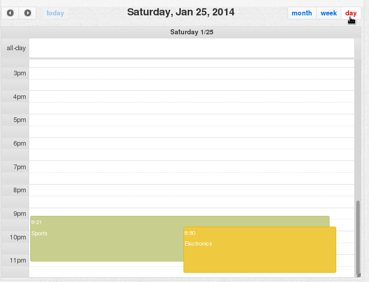

Calendar¶

Fields¶
Bold field names are required fields, others are optional.
| Field Name | Type | Description |
|---|---|---|
| start | Number | Timestamp when the event starts |
| label | Text | Event description |
| id | Number/Text | Event identifier |
| end | Number | Timestamp when the event finalized |
| allday | Boolean | True if the event lasts all day |
| color | Color | Background color |
| borderColor | Color | Border color |
| textColor | Color | Text color |
| action | Text | Name of the action, by default “add” |
If the identifier is setted, a new event with the same identifier will replace the old one